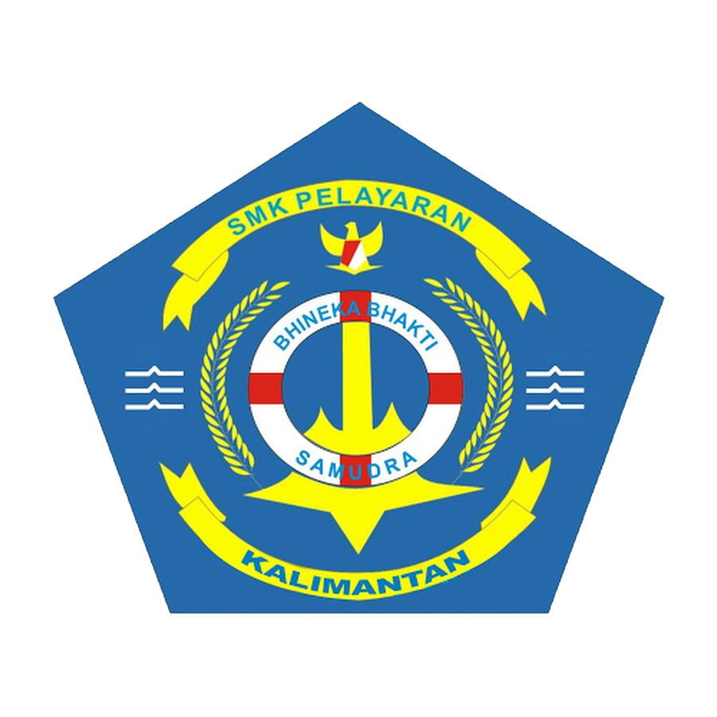

SMK Negeri Pelayaran Kalimantan
Maritime English · Bridge Watchkeeping
Belajar memberi dan menjawab perintah kemudi dalam bahasa Inggris, lalu mencobanya langsung di simulator kompas.
Pengajar: Tri Wulandari, S.Pd.I.
Gunakan tombol ← → atau tombol di bawah untuk berpindah slide.

| Order | Arti |
|---|---|
| Port five / ten / twenty | Kemudi ke kiri 5° / 10° / 20° |
| Starboard five / ten / twenty | Kemudi ke kanan 5° / 10° / 20° |
| Hard a-port / Hard a-starboard | Kemudi penuh ke kiri / kanan (sekitar 35°) |
| Midships | Luruskan daun kemudi, 0° |
| Ease to five / ten | Kurangi sudut kemudi menjadi 5° / 10° (arah sama) |
| Order | Arti |
|---|---|
| Steer course zero nine zero | Kemudikan kapal ke haluan 090° |
| Steady | Hentikan putaran, tahan haluan saat ini |
| Steady as she goes | Pertahankan haluan yang sedang dikemudikan |
| Meet her | Beri kemudi lawan untuk menahan putaran kapal |
| Nothing to port / starboard | Jangan biarkan kapal melewati haluan ke kiri / kanan |
Ucapkan angka haluan satu per satu: 120° = “one two zero”, 005° = “zero zero five”.
Helmsman wajib mengulang perintah (repeat back), melaksanakannya, lalu melapor setelah tercapai. Officer menutup dengan “Very well.”
Officer: Port twenty.
Helmsman: Port twenty, sir.
Helmsman: Twenty degrees of port rudder on, sir.
Officer: Very well. Midships.
Helmsman: Midships, sir. Rudder is amidships.
Officer: Steer course one two zero.
Helmsman: Steer one two zero, sir. … Steady on one two zero, sir.
000°
Rudder: 0° (midships)
Kamu adalah officer. Beri perintah, lalu amati bagaimana helmsman dan kapal menjawab.
Steer course
Tugas kelompok (3 orang: officer, helmsman, captain): praktikkan dialog dengan 5 perintah berbeda, lalu uji di simulator dan catat hasilnya.